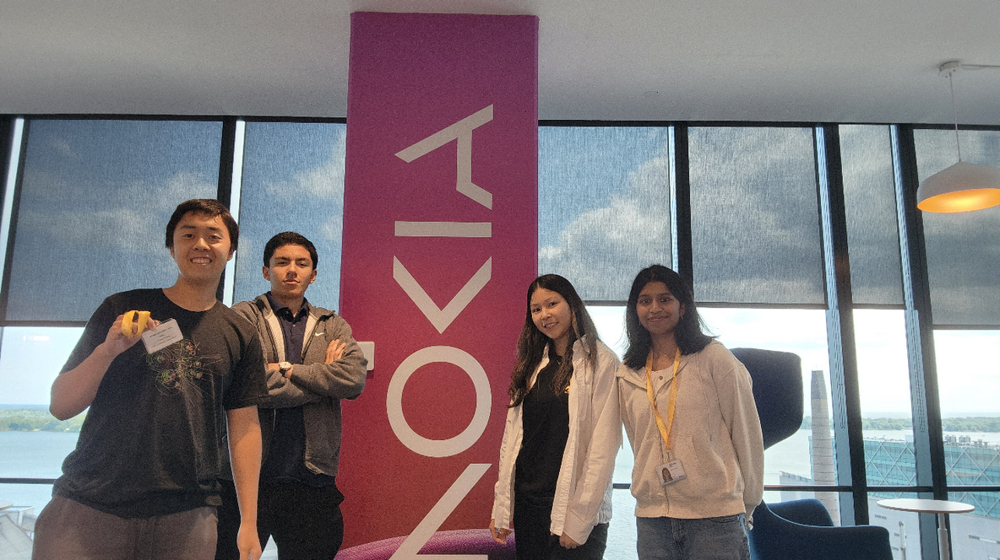
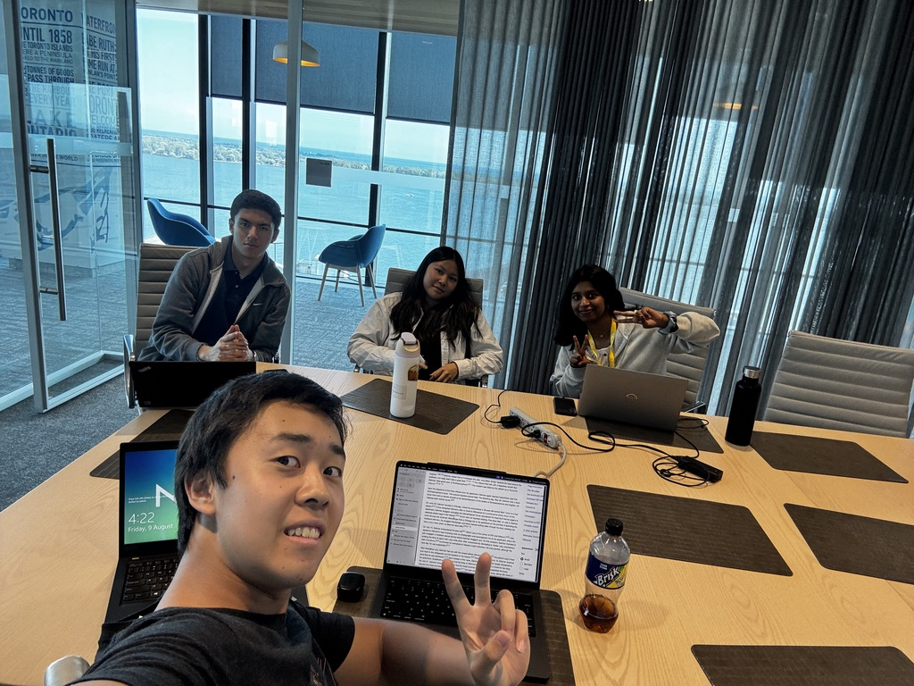
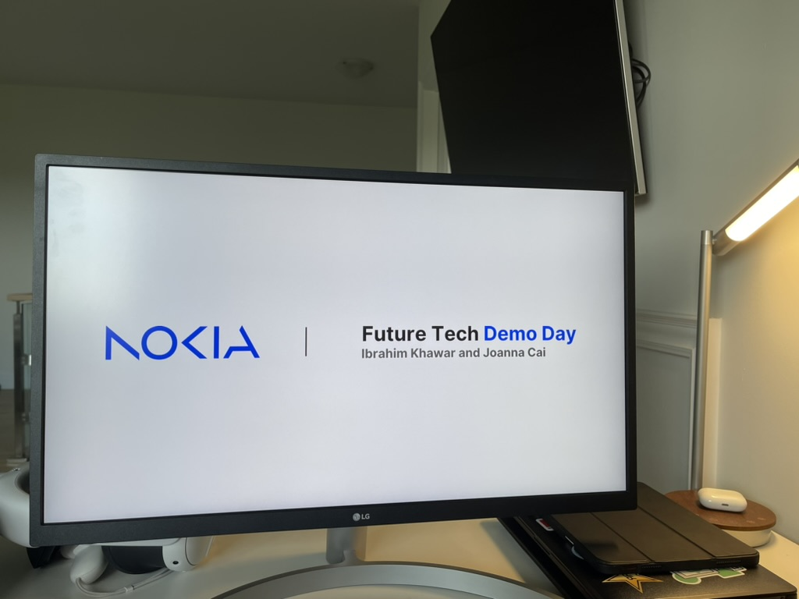

Nokia | CNS Security.
Software Engineer
- Developed a Python backend for Nokia’s Vulnerability Assessment and Management System (VAMS) API, generating detailed reports that summarize system vulnerabilities and offer remediation suggestions. This system enhanced customers' ability to quickly address platform vulnerabilities and validate network security.
- Developed stateful tests with Schemathesis and Hypothesis for Nokia's notifier platform, ensuring network security and stability.
- Presented projects at the end of the term.


